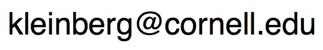

Example
| Company |
Contact |
Country |
| Alfreds Futterkiste |
Maria Anders |
Germany |
| Centro comercial Moctezuma |
Francisco Chang |
Mexico |
| Ernst Handel |
Roland Mendel |
Austria |
| Island Trading |
Helen Bennett |
UK |
| Laughing Bacchus Winecellars |
Yoshi Tannamuri |
Canada |
| Magazzini Alimentari Riuniti |
Giovanni Rovelli |
Italy |
Try it Yourself »
Fill out the form
- Why do I want to learn this skill? What does it mean to you? What are your motivations? Will you prove something
to yourself or people around you? Will you get a raise because you’re better
at your job or will you get a better job?
e.g. I want to learn web development because I want to build my own website
and prove to myself that I can do it!
- What will I achieve if I learn this skill?
Which doors will this skill open for you? Will you be able to earn more,
have more flexibility in your work hours, work remotely and travel more?
e.g. I will be able to add programming to my CV and get a job as a web developer.
- How will this skill change my life and my career?
Would you get a raise at your current job or more respect from your boss
once you’ve learnt this skill? Or will you be at Facebook, Amazon or Google
instead? How would your life change?
e.g. Learning programming will allow me to work remotely and spend more
time at home with my family.
- How will learning this skill impact the lives of my family, friends and coworkers?
What will you be able to do for your family or friends once you’ve learnt this skill?
How will it change the way they think of you? Will your coworkers respect you more?
e.g. I could do more at work and impress my boss, possibly getting a raise!
- How will I feel if I never accomplish this?
Would you feel disappointed? Would you feel like you’ve missed out?
I would feel really disappointed in myself.
- What would my life look like if I manage to accomplish this? Visualise it. What
would life look like from the moment you wake up to the time you go to sleep? Will
you be living by the sea? Would you kiss your beautiful wife/husband when you wake up?
I could be travelling around the world working as a freelance web developer!
I am a professor at Cornell University.
My research focuses on the interaction of algorithms and networks, and the
roles they play in large-scale social and information systems. My work has
been supported by an NSF Career Award, an ONR Young Investigator Award, a
MacArthur Foundation Fellowship,
a
Packard Foundation Fellowship, a
Simons Investigator Award, a
Sloan Foundation Fellowship, a
Vannevar Bush Faculty Fellowship,
and grants from Facebook, Google, Yahoo, the MacArthur Foundation, the ARO, and the NSF. I am a member of the
National Academy of Sciences,
the National Academy of Engineering,
and the American Academy of Arts and Sciences.
Link to: Contact information.
- D. Easley, J. Kleinberg.
Networks, Crowds, and Markets: Reasoning About a Highly Connected World.
Cambridge University Press, 2010.
-
This book is based on an inter-disciplinary course that we teach entitled
Networks.
The book, like the course, is designed at the introductory undergraduate
level with no formal prerequisites. To support deeper explorations, most
of the chapters are supplemented with optional advanced sections.
- J. Kleinberg, E. Tardos.
Algorithm Design.
Addison Wesley, 2005.
- This book is based on the undergraduate algorithms course that we both teach.
We also use the more advanced parts for our graduate algorithms course.
-
An on-line course on edX entitled
Networks, Crowds, and Markets,
with David Easley and Eva Tardos.
-
Recent courses at Cornell:
Recent Papers
-
R. Abebe, J. Kleinberg, M. Weinberg.
Subsidy Allocations in the Presence of Income Shocks.
Proc. 34th AAAI Conference on Artificial Intelligence (AAAI-20), 2020.
-
R. Abebe, S. Barocas, J. Kleinberg, K. Levy, M. Raghavan, D. Robinson.
Roles for Computing in Social Change.
Proc. ACM Conference on Fairness, Accountability, and Transparency (FAT*), 2020.
-
K. Donahue, J. Kleinberg.
Fairness and Utilization in Allocating Resources with Uncertain Demand.
Proc. ACM Conference on Fairness, Accountability, and Transparency (FAT*), 2020.
-
M. Raghavan, S. Barocas, J. Kleinberg, K. Levy
Mitigating Bias in Algorithmic Employment Screening: Evaluating Claims and Practices.
Proc. ACM Conference on Fairness, Accountability, and Transparency (FAT*), 2020.
-
K. Van Koevering, A. Benson, J. Kleinberg.
Frozen Binomials on the Web: Word Ordering and Language Conventions in Online Text.
Proc. 29th International World Wide Web Conference, 2020.
-
J. Gaitonde, J. Kleinberg, E. Tardos.
Adversarial Perturbations of Opinion Dynamics in Networks.
Proc. 21st ACM Conference on Economics and Computation (EC), 2020.
Jon Kleinberg
Computing and Information Science
Gates Hall
Cornell University
Ithaca, NY 14853
(607)255-9197
